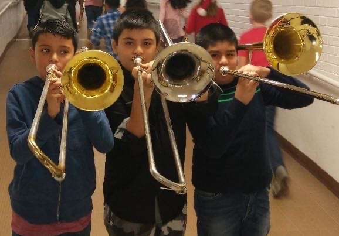

When i was little, i always wanted to play an instrument. My friend
joined the school band and then i decided to join them. My first
instrument was the trombone. I played it for about 3 years and then i
quit but i still really liked it. When i quit the school band i
decided that i wanted to play a different something different. I
decided to try and learn the piano when i was 11-12. I started by
pllaying songs from games i played and thats where i sorta just how i
started.

Taking photos
I started taking photos when i was around 12-14 whenever we went out
on a vacation. I almost never took photos because i didn't know what
or how to photograph. I always started with something small like a
flower, decor, or a picture on the wall. I started to photograph
familiy photos whenever i got the chance. All of those where on my
phone and i never went beyond that until i started to go to Mcc. I was
given an actual camera to take photos. I did the same thing as i did
last time and took photos of smaller objects or things to really
understand the settings.